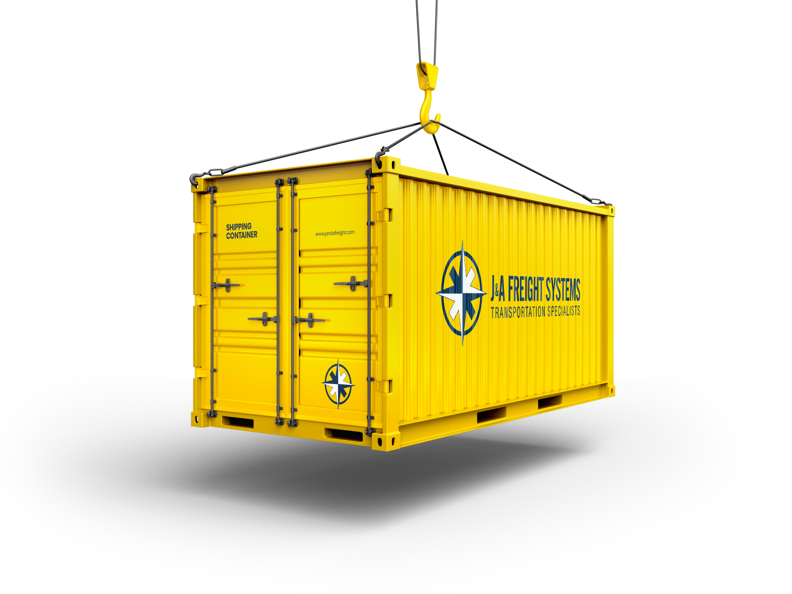

The last 50 miles of an ocean shipment are often the hardest. J&A coordinates container pickup at ports and rail ramps, transloading, and final delivery so your import or export keeps moving.

Drayage is the short-haul trucking of shipping containers between a port or rail ramp and a warehouse, distribution center, or transload facility. It sounds simple, but it involves chassis availability, terminal appointments, free-time windows, per-diem and demurrage clocks, customs holds, and driver hours. When any of those slip, the costs add up fast.
Chicago is one of North America's largest inland rail hubs, and J&A has coordinated containerized freight through its ramps and the coastal ports that feed them for years. Our drayage partners are vetted for intermodal experience, chassis access, and port and ramp credentials. We coordinate with your customs broker, track container availability, and schedule pickup so free time is used rather than wasted.
Because drayage is only one leg of the journey, we also handle what comes next: transloading into domestic trailers, full truckload or LTL delivery inland, and short-term warehousing when the receiving dock is not ready.
We monitor vessel arrival, availability, and last free day so pickups are scheduled before demurrage starts.
Terminal appointments and chassis are arranged by carriers who work those ports and ramps daily.
Drayage, transload, over-the-road delivery, and empty return are planned as one move with one point of contact.
Container numbers, port or ramp, free-time window, customs broker, and final destination.
A vetted drayage carrier is assigned, appointments are made, and customs status is confirmed before dispatch.
The container is delivered live or dropped, transloaded if needed, and the onward move is booked in our TMS.
Empty returns are scheduled inside free time and every charge is audited against the quote.
Importers and exporters moving containers through Chicago-area rail ramps and the coastal ports that feed them, manufacturers receiving ocean freight for inland distribution, and retailers consolidating import containers for store or DC delivery. Shippers who are tired of coordinating ocean carriers, drayage, customs, and inland trucking separately are our best fit.
The questions shippers ask before they book.
Our strongest coverage is the Chicago-area intermodal ramps and the ports and ramps that connect to them across the Midwest, Gulf, East, and West Coasts. Tell us your routing and we will confirm capacity.
We coordinate with your licensed customs broker, tracking hold and release status so pickups are scheduled at the right time. If you need a broker, we can recommend one.
Drayage is the short truck move at each end. Intermodal is a longer journey that combines rail with truck drayage at origin and destination. J&A coordinates both.
By monitoring availability and last free day, scheduling pickups and empty returns inside the free-time windows, and escalating immediately when a terminal or customs issue threatens the clock.
Yes. Transloading lets you move container freight inland on 53-foot trailers and return the container quickly, often lowering total cost on longer inland lanes.
Get a quote in minutes. A dedicated logistics expert, not a call center, responds within one business day.